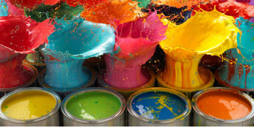
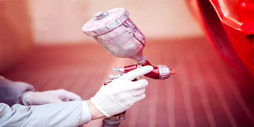
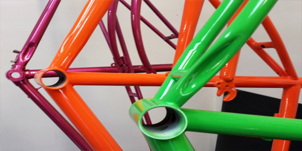

Our Services
It consists of an electrostatic process of application of paint on different substrates, mainly used as a final finish, due to the wide range of colors that can be applied. Before applying the paint, the pieces go through a process of surface preparation that consists of degreasing, phosphating and different washes. Similarly, after applying the paint, the piece is subjected to temperature to achieve polymerization.
Liquid paint is an excellent choice for finishing assembled components and products where versatility and aesthetics are required. It can be applied on a high variety of substrates and with a customized final finish
- Pretreatment
- Electronic Paint Application
- Flash-Off
- Oven Drying/ Curing
Its main advantage is that it can be applied on parts that can not be subjected to high temperatures (curing can be performed at less than 100ºC). - For assembled parts or assemblies that can not be painted in cataphoresis or powder.
-Decorative finishes that require low paint thickness. - Greater range of colors.
GALLERY
-

Liquid Paint
-

Applied
-

Outcome
It consists of an electrostatic process of application of paint on different substrates, mainly used as a final finish, due to the wide range of colors that can be applied. Before applying the paint, the pieces go through a process of surface preparation that consists of degreasing, phosphating and different washes. Similarly, after applying the paint, the piece is subjected to temperature to achieve polymerization.
Liquid paint is an excellent choice for finishing assembled components and products where versatility and aesthetics are required. It can be applied on a high variety of substrates and with a customized final finish
- Pretreatment
- Electronic Paint Application
- Flash-Off
- Oven Drying/ Curing
Its main advantage is that it can be applied on parts that can not be subjected to high temperatures (curing can be performed at less than 100ºC). - For assembled parts or assemblies that can not be painted in cataphoresis or powder.
-Decorative finishes that require low paint thickness. - Greater range of colors.